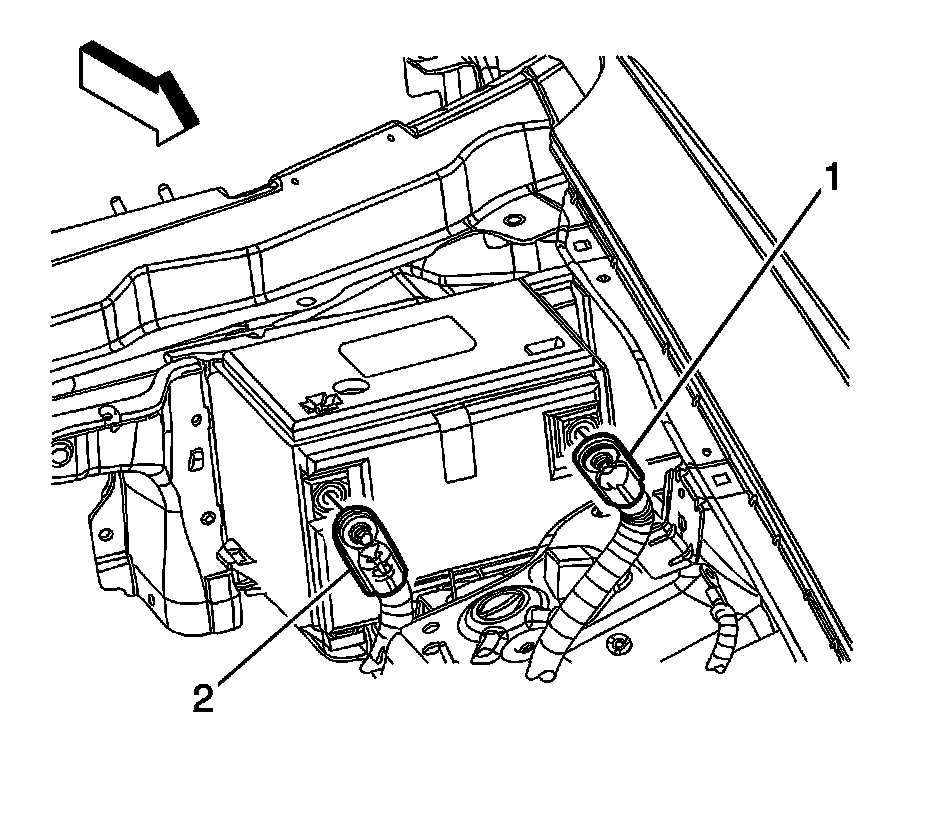
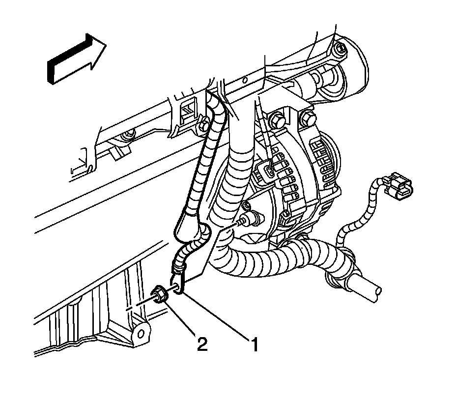
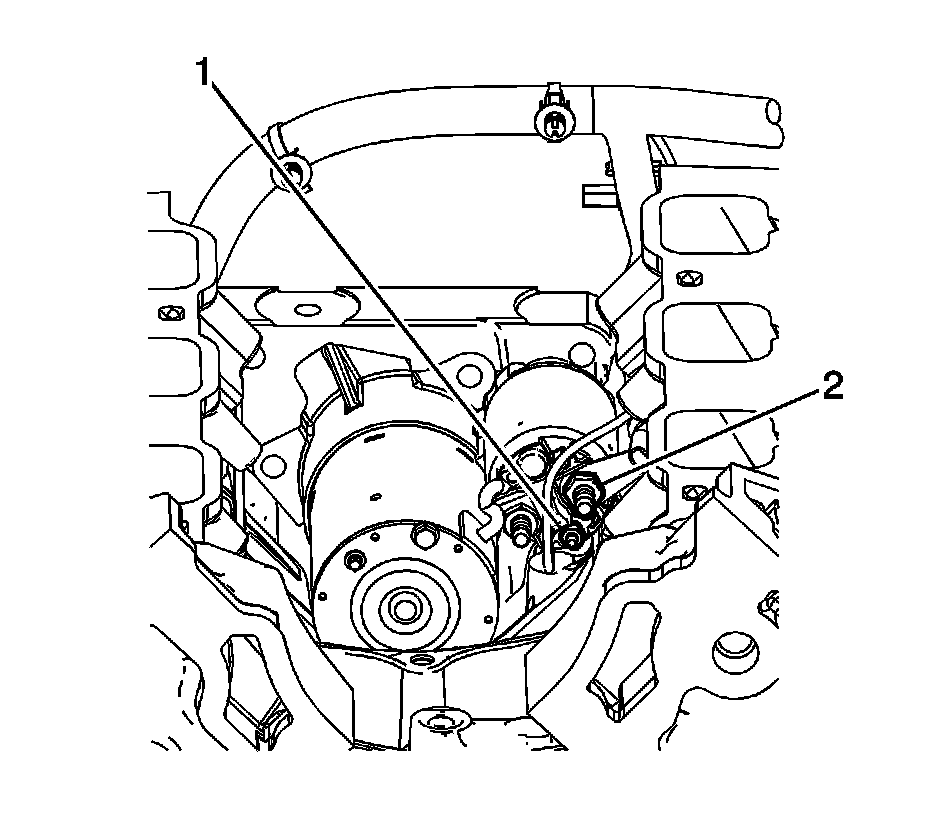
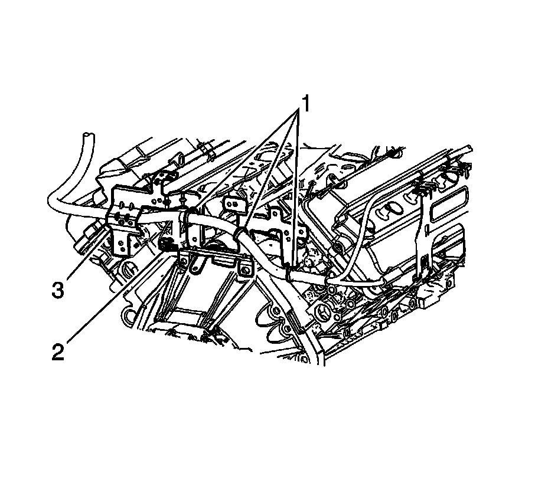
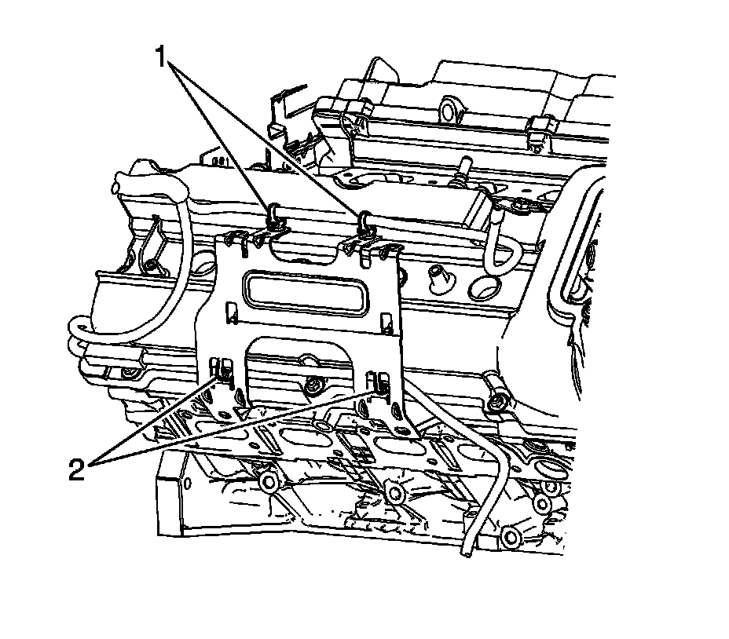
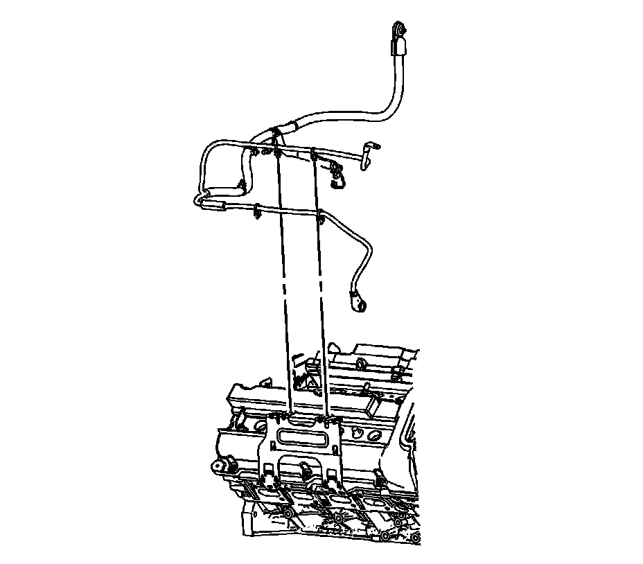

Battery Positive Cable Replacement (Right Hand Drive)
Battery Positive Cable Replacement (LH2 (RHD))
Removal Procedure
Important:
* Always use replacement cables that are of the same type, diameter, and length of the cables that you are replacing.
* Always route the replacement cable the same way as the original cable.

1. Disconnect the negative battery cable. Refer to Battery Negative Cable Disconnection and Connection (LHD) (Service and Repair)Battery Negative Cable Disconnection and Connection (RHD) (Service and Repair) .
2. Loosen the positive battery cable bolt.
3. Remove the positive battery cable (2) from the battery.

4. Open the bussed electrical center (BEC) terminal cover.
5. Remove the positive battery cable nut (1).
6. Remove the positive battery cable (2) from the BEC stud.

7. Raise and support the vehicle. Refer to Lifting and Jacking the Vehicle (Service and Repair) .
8. Reposition the positive battery cable boot at the generator output BAT terminal.
9. Remove the generator output BAT terminal nut (2) and remove the positive battery cable (1) from the generator.
10. Lower the vehicle.
11. Remove the intake manifold. Refer to Intake Manifold Replacement (Service and Repair) .

12. Remove the starter motor BAT terminal nut (2).
13. Remove the starter motor S terminal nut (1).
14. Remove the positive battery cable from the starter.

15. Remove the positive battery cable clips (1, 3) from the engine wiring harness bracket.
16. Disconnect the positive battery cable electrical connector (2) from the engine wiring harness electrical connector.

17. Remove the positive battery cable upper clips (1) from the engine wiring harness bracket.
18. Remove the positive battery cable lower clips (2) from the engine wiring harness bracket.

19. Remove the positive battery cable from behind the rear engine wiring harness bracket.
20. Remove the positive battery cable from the vehicle.
Installation Procedure
1. Install the positive battery cable to the vehicle.
2. Install the positive battery cable behind the rear engine wiring harness bracket.
3. Install the positive battery cable lower clips (2) to the engine wiring harness bracket.
4. Install the positive battery cable upper (1) clips to the engine wiring harness bracket
5. Install the positive battery cable clips (1, 3) to the engine wiring harness bracket.
6. Connect the positive battery cable electrical connector (2) to the engine wiring harness electrical connector.
7. Install the positive battery cable to the starter.
Notice: Refer to Fastener Notice (Fastener Notice) .
8. Install the starter motor S terminal nut (1).
Tighten the nut to 4 N.m (35 lb in).
9. Install the starter motor BAT terminal nut (2).
Tighten the nut to 10 N.m (89 lb in).
10. Install the intake manifold. Refer to Intake Manifold Replacement (Service and Repair) .
11. Raise and support vehicle.
12. Install the positive battery cable (1) to the generator and install the generator output BAT terminal nut (2).
Tighten the nut to 10 N.m (89 lb in).
13. Position the positive battery cable boot at the generator output BAT terminal.
14. Lower the vehicle.
15. Install the positive battery cable (2) to the BEC stud.
16. Install the positive battery cable nut (1).
Tighten the nut to 15 N.m (11 lb ft).
17. Close the BEC terminal cover.
18. Position the positive battery cable (1) to the battery.
19. Tighten the positive battery cable bolt.
Tighten the bolt to 17 N.m (13 lb ft).
20. Connect the negative battery cable. Refer to Battery Negative Cable Disconnection and Connection (LHD) (Service and Repair)Battery Negative Cable Disconnection and Connection (RHD) (Service and Repair) .